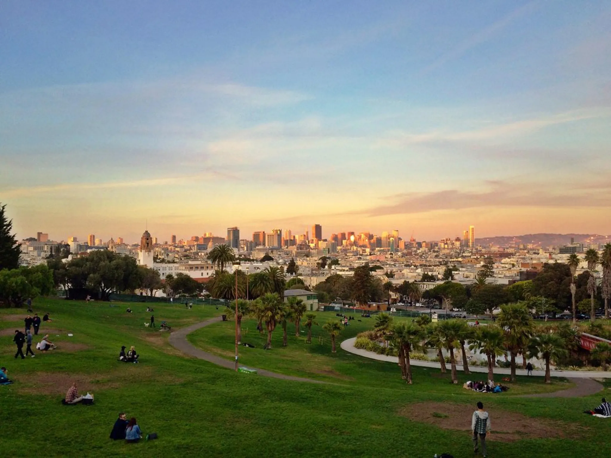

Better Air
I have a confession: I am hopelessly lazy.
Or at least, that's how it looks from the outside.
The truth is uglier. I'm not lazy so much as avoidant. A small spike of anxiety appears, a vague discomfort, and I retreat straight into the soft, infinite glow of YouTube. My Whoop politely informs me that while I tell myself I am "relaxing," my stress levels are quietly climbing. I ignore it. I always do.
And then something strange happened.
I went to California.
Three months ago, I left Paris to chase the AI gold rush, meaning, money, power, whatever future-shaping thing everyone pretends they're not chasing. I expected hustle. I expected pressure. What I didn't expect was this: I would wake up, step outside, and feel calm. Not guilty-calm. Not procrastination-calm. Real calm. Optimistic. Awake.
I worked without forcing myself. I learned without bargaining. I didn't need YouTube as an anesthetic.
Now I'm back in Paris. Back to normal. Back to friction.
And the question won't leave me alone:
Why does California make you so much more productive?
Climate, and the Body First
Climate sounds trivial until you live somewhere else. Sunlight does something primitive to the brain. It lowers the background noise. It makes relaxation the default instead of the reward. When your nervous system isn't constantly bracing, effort feels cheaper. You don't need motivation speeches to start. You just start.
The Feeling That Things Are Malleable
In California, there's a quiet assumption in the air: things can change. Systems are temporary. Careers are editable. This belief seeps into you. You stop optimizing for stability and start optimizing for momentum. Work becomes less about proving yourself and more about shaping something.
Loving Work, Loving Learning
When learning is socially rewarded, curiosity stops feeling indulgent. In California, liking your work isn't suspicious. Obsession isn't something you apologize for. You're allowed, encouraged, to care too much.
The Eavesdropping Effect
Paul Graham once wrote about the "eavesdropping" of a city, the ambient conversations you overhear, the unspoken signals about what matters.
In Paris, you work all day, then you walk home past terraces full of people laughing, drinking, performing friendship. The message is clear: status is social. Winning looks like being seen. Being locked alone in a room doesn't feel like progress. It feels like missing out.
We're social animals. We adapt. Even when we don't want to.
In California, the eavesdropping is different. You overhear ambition. Side projects. Failed startups. Half-formed ideas spoken out loud. Sitting alone working doesn't feel like losing. It feels like training.
A Stranger Thought
Here's a weirder idea. On national holidays, productivity drops, even when you forget it's a holiday. Something in the collective pace shifts, and your brain syncs to it without asking permission.
Maybe cities work the same way.
Maybe productivity isn't just willpower or discipline. Maybe it's resonance. Your internal clock tuning itself, unconsciously, to the rhythm of the people around you.
And maybe laziness isn't a personal flaw at all, but a mismatch between you and your environment.
If that's true, the most productive thing you can do isn't to work harder.
It's to choose better air.